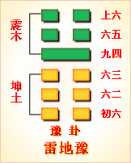

<!DOCTYPE html PUBLIC "-//W3C//DTD XHTML 1.0 Transitional//EN" "http://www.w3.org/TR/xhtml1/DTD/xhtml1-transitional.dtd">

<html xmlns="http://www.w3.org/1999/xhtml">
<head>
<meta content="text/html; charset=utf-8" http-equiv="Content-Type"/>
<title>周易第十六卦：豫�?雷地�?震上坤下原文解释翻译-周易-国学�?/title>
<meta content="周易,豫卦,雷地�?震上坤下" name="keywords"/>
<meta content="周易,豫卦,雷地�?震上坤下，周易第十六卦：豫卦 雷地�?震上坤下解释翻译�?（雷地豫）震上坤�?《豫》：利建侯行师�?初六，鸣豫，凶�?六二，介于石，不终日，贞吉�?六三，盱豫，悔，迟有悔�?九四，由豫，大有得，勿疑。朋盍簪�?六五，贞疾，恒不�? name="description"/>
<link href="css.css" media="screen" rel="stylesheet" type="text/css"/>
</head>
<body>
<div class="gxlayout">
</div>
<div class="gxlayout">
<div class="ihead">
<div class="title"><a>周易</a></div>
<ul class="more fl">
<li>当前位置:<a>国学梦首�?/a> &gt; <a>国学经典</a> &gt; <a>经部</a> &gt; <a>四书五经</a> &gt; <a>周易</a> &gt;  周易第十六卦：豫�?雷地�?震上坤下原文解释翻译</li>
</ul>
</div>
<div class="gxbl fl">
<div class="latitle">

<h1>周易第十六卦：豫�?雷地�?震上坤下</h1>
<div class="lainfo"><span>作者：佚名</span> <span>全集�?a>周易</a></span> <span>来源：网�?/span> <span>[<a rel="nofollow" target="_blank">挑错/完善</a>]</span></div>
</div>
<div class="lacontent">
<div class="clearfix"></div>
<!--<!-- allowfullscreen="" frameborder="0" height="36" src="http://www.ximalaya.com/swf/sound/yellow.swf?id=1382579&amp;auto=true" width="260"></iframe>-->
<p style="text-align:center"><strong></strong></p>
<p style="text-align:center"><a>周易第十六卦详解</a></p>
<p style="text-align:center"><a>第十六卦初六爻详�?/a>　<a>第十六卦六二爻详�?/a>　<a>第十六卦六三爻详�?/a></p>
<p style="text-align:center"><a>第十六卦九四爻详�?/a>　<a>第十六卦六五爻详�?/a>　<a>第十六卦上六爻详�?/a></p>
<p><strong><a target="_blank">周易</a>第十六卦：豫 雷地�?震上坤下</strong></p>
<p>豫：利建侯行师�?/p>
<p>彖曰：豫，刚应而志行，顺以动，豫。豫，顺以动，故天地如之，而况建侯行师�?天地以顺动，故日月不过，而四时不�?圣人以顺动，则刑罚清而民服。豫之时义大矣哉!</p>
<p>象曰：雷出地奋，豫。先王以作乐崇德，殷荐之上帝，以配祖考�?/p>
<p>初六：鸣豫，凶。象 曰：初六鸣豫，志穷凶也�?/p>
<p>六二：介于石，不终日，贞吉。象曰：不终日，贞吉;以中正也�?/p>
<p>六三：盱豫，悔。迟有悔。象曰：盱豫有悔，位不当也�?/p>
<p>九四：由豫，大有得。勿疑。朋盍簪。象曰：由豫，大有得;志大行也�?/p>
<p>六五：贞疾，恒不死。象曰：六五贞疾，乘刚也。恒不死，中未亡也�?/p>
<p>上六：冥豫，成有渝，无咎。象曰：冥豫在上，何可长也�?/p>
<p><strong><a href="16_豫卦.html" target="_blank">豫卦</a>卦象，雷地豫卦的象征意义</strong></p>
<p><strong>雷地豫卦，由<a href="02_坤卦.html" target="_blank">坤卦</a>�?a href="51_震卦.html" target="_blank">震卦</a>组成，下坤上震，坤为地，为顺；震为雷，为动。雷依时出，预示大地回春�?/strong> 因顺而动，和乐之源。此卦与<a href="15_谦卦.html" target="_blank">谦卦</a>互为综卦，交互作用。豫卦象征着欢乐愉快，给人的启示是做事要顺时依势�?/p>
<p>从卦象上看，坤为地在下，是万物生长之处，震为雷在上，雷在沉寂的大地上发生轰鸣，表�?a target="_blank">春天</a>来了，给万物带来了生机，所以形成了万物合乐的局面。震为动在上，坤为顺在下，说明震在前动，坤在后顺其意志而行，从而显出彼此的和好，其乐无穷的气氛�?/p>
<p>豫卦�?a target="_blank">于谦</a>卦之后，《序卦》之中这样说道：“有大而能谦必豫，故受之以豫。”在此之前是<a href="14_大有�?html" target="_blank">大有�?/a>与谦卦，接着一定是代表愉悦的豫卦。豫卦与谦卦互为正覆关系，“豫”有愉悦之意，但也有居安思危的预备之意�?/p>
<p>《象》中这样解释豫卦：雷出地奋，豫。先以作乐崇德，殷荐之上帝，以配祖考�?/p>
<p>《象》中指出：雷从地下出来，万物振作，这就是豫卦。古代君王学习这种精神，制作音乐来推崇道德，并以隆重的仪式向上帝祭祀，连带也向祖先祭祀�?/p>
<p>雷地豫卦启示了顺时依势的道理，属于中中卦。《象》中这样来断此卦：太公插下杏黄旗，收妖为徒归西歧，自此青龙得了位，一旦谋望百事宜�?/p>
<p>雷地豫卦卦名为豫。《说文》中�?“豫，象之大也。”由此可见豫的本义是指大象。大象的特点是走路缓慢，一副悠然自得的样子，并且象骨与象牙可以加工成精美的器具，所以豫的引申义为娱乐。正如�?a target="_blank">尔雅</a>》中所说“豫，乐也。”能够大有收获，并且以谦虚之德自居，必然可以尽享喜悦与娱乐。所以谦卦之后便是豫卦。《序卦传》中�?“大而能谦必豫，故受之以豫。”说的便是这个意思。《杂卦传》中�?“谦轻而豫怠也。”意思是说，谦卦是谦卑自处，豫卦是心志怡悦。其“怠”字，与“怡”字全是“心”与“台”相合，古代通用，实为一个字。《经典释文》中认为豫还有预备的意思，不过从卦辞与爻辞分析，这种意思不是很明显�?/p>
<p>雷地豫卦从卦象上分析，豫卦上卦为震为雷为木为动，下卦为坤为地为土为顺，雷声振动大地，草木在土地上生长，川页应物性而动，这就是豫卦的卦象。雷声振动大地，可以使大地上万物复苏，开始展示生�?草木在土地上生长，顺应四时而变�?万物顺应四时而动，人也应当效法万物，劳逸结合，顺应时势而动�?/p>
<p>豫卦之象:有两重山，为出字;官人在中，出求贵�?一鹿一马，指禄马运�?金钱数锭一堆者，乃厚获钱钞无数，占者得之求才遇贵吉利之兆。凤凰生雏之卦，万物发生之象�?/p>
<p>关键词：周易,豫卦,雷地�?震上坤下</p>
<div class="clearfix"></div>
<div class="title"><div class="thot">解释翻译</div><span>[挑错/完善]</span></div><p><a href="16_豫卦.html" target="_blank">豫卦</a>：有利于封侯建国，出兵作战�?/p>
<p>初六：白天做事犹豫不决，凶险�?/p>
<p>六二：夹在了石缝中不到一天被救出来。占得吉�?/p>
<p>六三：思想迟钝糊涂足以让人后悔；行动缓慢不定，更使人后悔莫及�?/p>
<p>九四：经商先犹豫不决，反复考虑觉得会有大收获，便不再疑虑。后来把得到的朋贝制成头�?/p>
<p>六五：占问疾病，会痊愈并长久不死</p>
<p>上六：晚上反复考虑，事情是成功还是有变故�?结果没有变故�?/p>
<div class="title"><div class="thot">注释出处</div><span>[请记住我�?国学�?www.guoxuemeng.com]</span></div><p>①豫是本卦标题。豫的意思是犹豫、疑虑和预计、熟虑。全卦内容主要讲人的思想行为。豫既是多见词，又与内容有关，所以用它来作标题�?/p>
<p>②鸣：用作“明”，意思是明亮，这里把白天�?/p>
<p>③介：夹�?/p>
<p>④盱：意思是缓慢�?/p>
<p>(5)由豫：即犹豫�?/p>
<p>(6)得：得到朋贝（货币）�?/p>
<p>(7)�?he)：合。簪：古时盘头发的一种头饰。朋盍簪：用朋贝作成簪笄�?/p>
<p>(8)冥：晚上�?/p>
<p>(9)渝：变故�?/p>
<div class="clearfix"></div>
<div class="contextdhall clearfix">
<ul>
<li>上一篇：<a href="15_谦卦.html">周易第十五卦：谦�?地山�?坤上艮下</a> </li>
<li>下一篇：<a href="17_随卦.html">周易第十七卦：随�?泽雷�?兑上震下</a> </li>
<li>全   文�?a>周易</a></li>
</ul>
</div>
</div>
<div class="clearfix mt20"></div>
</div>
</div>
<div class="clearfix mt20"></div>
<div class="gxlayout">
</div>
<script>
var _hmt = _hmt || [];
(function() {
  var hm = document.createElement("script");
  hm.src = "https://hm.baidu.com/hm.js?872034ded637616c5cf8e173a446bb0e";
  var s = document.getElementsByTagName("script")[0];
  s.parentNode.insertBefore(hm, s);
})();
</script>
</body>
</html>
